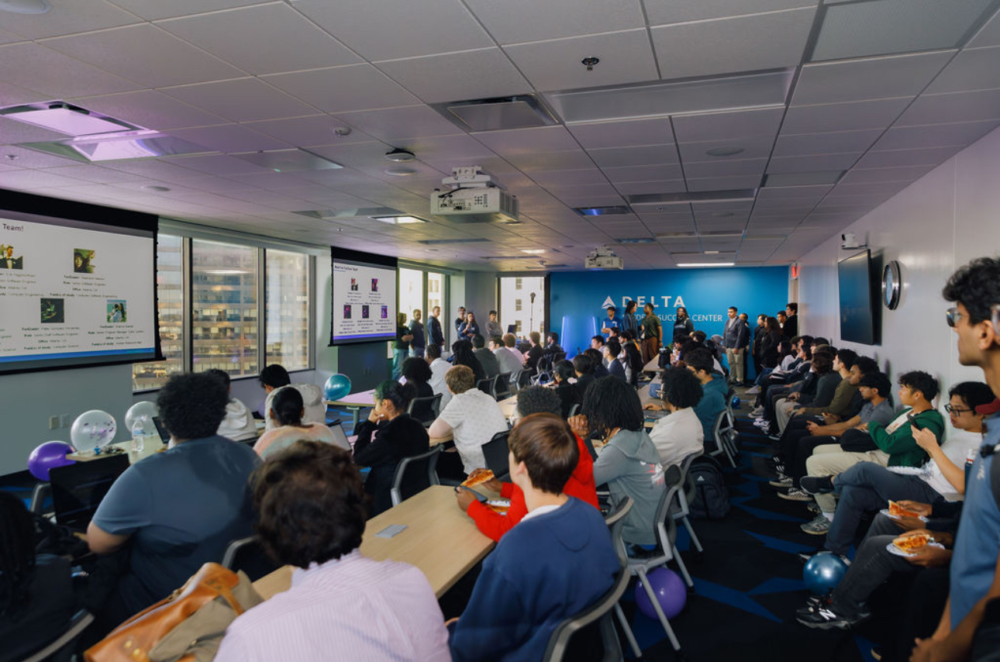

PROGSU - Fanduel X Ping Pong Tournament
An engaging student event designed to showcase FanDuel's internship program while providing a comfortable space for networking. Attendees had the chance to connect with company representatives, learn about career opportunities, and participate in a friendly ping pong tournament that encouraged collaboration and team-building. The event combined professional development with fun, creating a memorable experience that highlighted FanDuel’s dynamic culture.
View image gallery
Overview
Date: November 2025
Role: Event Planning, Corporate Partnership Coordination, Tech Development (Photobooth), Branding & Marketing
Problem
PROGSU needed a high-impact event that strengthened industry relationships, provided internship access for students, and created a space where students could network comfortably. We wanted an engaging student experience—not just a presentation—to meaningfully connect with potential interns. The challenge was combining a professional employer showcase with a fun activity that kept students excited, involved, and willing to stay after the presentation.
Planning & Research
Because this event blended corporate recruiting with student engagement, our planning focused on balancing professionalism with fun while maximizing interaction between FanDuel staff and students.
- Needed a structure that encouraged authentic networking, not just passive listening. Students often feel intimidated at employer events, especially in large groups.
- Wanted a “hook” to increase turnout. A ping pong tournament offered a perfect balance: interactive, low-pressure, and easy for any skill level.
- Coordinated with FanDuel’s recruiter to understand their goals: showcasing internship roles, answering questions, and observing student interest.
- Developed a custom-coded jumbotron photobooth to replicate a “sports arena” atmosphere and give students a fun way to capture moments with FanDuel employees.
- Decided to follow the same marketing strategy as last time with an increase in our social media usage since our page had nearly 200 new followers.
- We wanted to make this event more exclusive so there was more oppurtunity for one-on-one converstations with recruiters. We neededed to come up with a strategy that brought awareness to the event but still kept the crowd manageable.
- Fanduel offered a lot of merch, so more oppurtunities to win prizes were needed. A scavenger hunt not only increased engagement, it was exclusive marketing and a chance to give away prizes.
- Needed to find a room that could host at least 80 students, an area to have the ping pong table, and sufficient space for the team of 6 Fanduel employees to present thier slides.
- Created budgets for food, decorations, and variable costs
.png)
Marketing Strategy
Developed a multi-channel marketing approach to maximize event visibility and attendance:
- Word of Mouth: PROGSU officers promoted the event in classes and at campus events.
- Social Media: Teasers, countdowns, and visuals teasing the ping pong tournament.
- Scavenger Hunt: Created a series of flyers around campus that gave details on the event and offered a prize to the winners if they showed up to the event.
- Custom Jumbotron Photobooth (coded by me) Access it here
- Event Flyers & Social Media Assets: Consistent branding to promote excitement and professionalism.
- Slide Templates: Branded PROGSU x FanDuel intro slides.
- Directional Signage: Posters guiding students to the event and station labels.
- Outreach Team: Coordinated with Fanduel Representatives to ensure smooth communication.
- Setup Team: Arranged room layout and decorations.
- Tech Team: Managed projector, casting for the photobooth, speakers, and presentation slides.
- Check-In Team: Handled student registration, ensured smooth entry, and guided attendees to seats.
- Food Team: Picked up and distributed pizza efficiently during breaks.
- Photo Team: Captured key moments for social media and event recap.
- Tournament Team: Managed ping pong brackets and gameplay rules, adjusted on the fly due to space limitations.
- Students checked in, guided to food and refreshments, and were encouraged to fill out seats starting from the front rows.
- FanDuel employees and a recruiter presented the internship program, sharing insights and answering questions.
- Students had dedicated time to network with FanDuel team members in small groups.
- Ping Pong Tournament: Students who wanted to play went 1v1, winner playing the next person in line.
- Closing remarks: Winners announced, connections reinforced, and students encouraged to join PROGSU channels and follow social media for upcoming events.
- Quietly coordinated with the tournament team while the presentation was ongoing.
- Presented reservation confirmations and negotiated with building staff to secure permission.
- Outcome: the tournament proceeded as planned and attendees never saw the behind-the-scenes negotiation.
- Rearranged chairs and opened standing areas to improve circulation and comfort.
- Redirected some attendees to the photobooth and food stations to spread people out.
- Outcome: the energy remained positive, the FanDuel team was impressed by turnout, and safety was maintained.
- Troubleshot adapters, casting protocols, and resolution settings.
- Pivoted to a device-only photobooth experience (photos still captured and downloadable via QR code).
- Outcome: attendees still used the photobooth and content was captured for social media, even without the big-screen display.
- Collaborating with an industry partner required more structured communication and preparation, strengthening my professionalism and coordination skills.
- Technical setbacks highlighted the importance of having backup plans and staying calm under pressure. Now I'll always remember to have multiple backup options (HDMI, AirPlay, casting alternatives) whenever we plan on haveing tech-driven features.
- Rapid problem-solving kept the event flowing. Adjusting the seating overflow and adapting the tournament logistics prevented interruptions and maintained energy.
- Networking-focused events benefit from intentional layout planning (seating flow, photobooth placement, accessible recruiters, etc.).
- The turnout exceeded expectations, showing that our marketing strategy and pre-event buzz were extremely effective. When in doubt, we'll always know to book a bigger room!
- Students left with valuable connections, a sense of community, and a positive impression of both PROGSU and the FanDuel team, demonstrating the impact of well-designed, student-centered event.
Design & Materials
Visual and technical components included:
Execution
Managed the event with clearly defined roles for the team:
Event flow:
Challenges
Despite careful planning, the event hit a few unexpected issues that required quick thinking and close team coordination. We handled each without disrupting the attendee experience.
-
Last-minute venue restriction on the ping pong table
Although the ping pong table was approved in our reservation, building staff tried to prohibit its use during the FanDuel presentation.
Higher-than-expected turnout and limited seating
Actual attendance exceeded our seating plan, which created crowding and limited places to sit.
Technical difficulties casting the photobooth
The custom jumbotron photobooth worked in testing but failed to display correctly on the building’s projector/casting system. We tried multiple adapters and casting methods during setup.
This event taught me how to navigate unexpected obstacles, maintain professionalism under pressure, and ensure attendees still have a great experience, even when plans shift.
Seeing students actively engage with recruiters, participate in the tournament, and enjoy the photobooth setup (even with technical limitations) reaffirmed how intentional planning and thoughtful design can elevate the entire experience.
This event not only strengthened PROGSU’s reputation but also helped me grow my leadership, collaboration, and problem-solving skills on a larger scale.
Key takeaways:Reflection